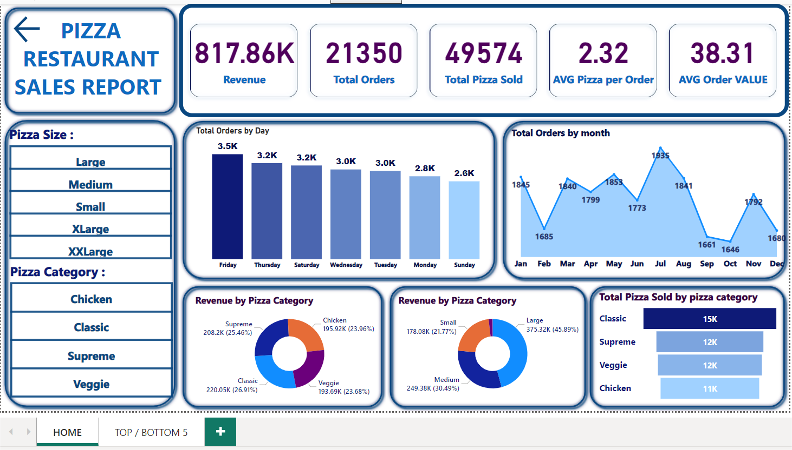
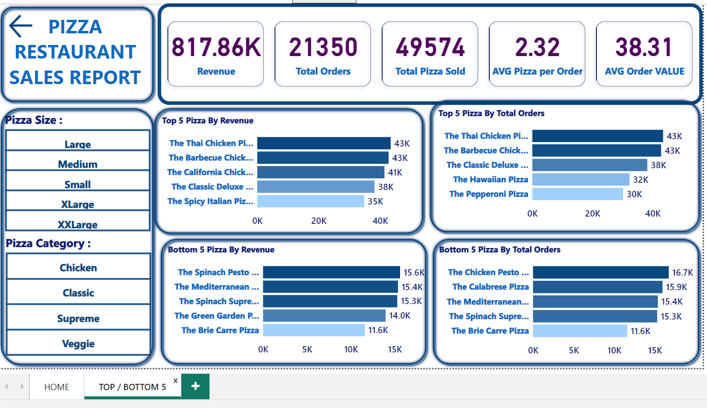

Pizza Restaurant Sales Analysis
Tools: Power BI and SQL
Introduction:
The Pizza Restaurant Sales Analysis project is designed to provide insights into the sales and order trends of a pizza restaurant. Using Power BI, this project visualizes key metrics and helps in understanding the performance and customer preferences. The analysis includes various dimensions such as sales by type, order trends, and customer behavior, enabling data-driven decision-making for improving restaurant operations and strategies.
Dashboard Details:
Home:
The Home Page offers an overview of key sales metrics, including total sales and sales by pizza type. It features visualizations that show sales trends over time, providing insights into peak sales periods and popular pizza types. This page helps in understanding overall sales performance and customer preferences.
Top/Bottom:
The Top/Bottom Page highlights the best and worst-performing aspects of the restaurant's sales. It includes visualizations that showcase the top and bottom selling pizza types, peak and low sales periods, and best and worst customer segments. This page helps in identifying strengths to capitalize on and areas needing improvement.
